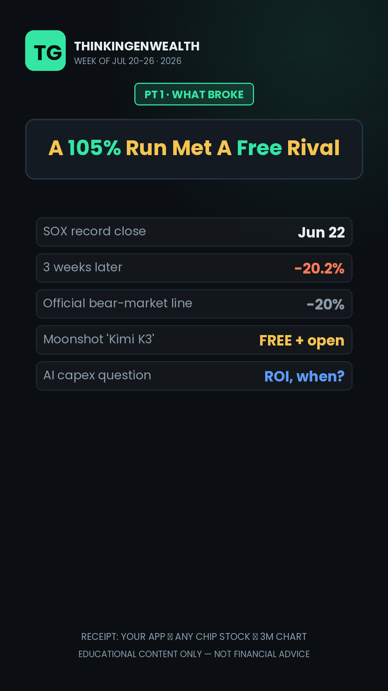
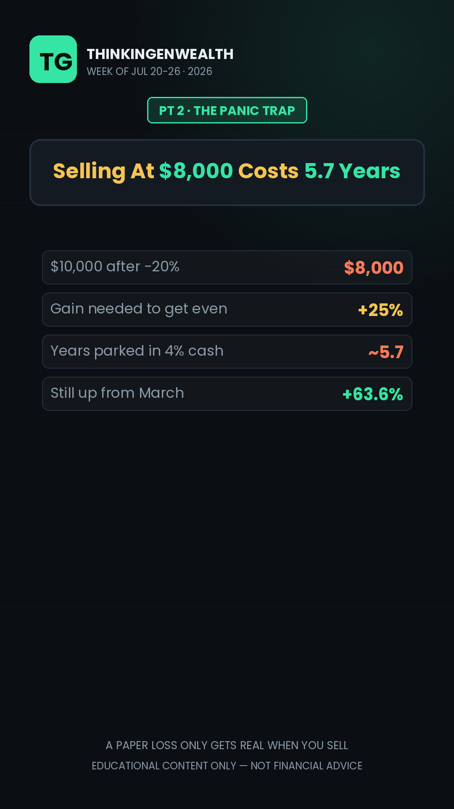
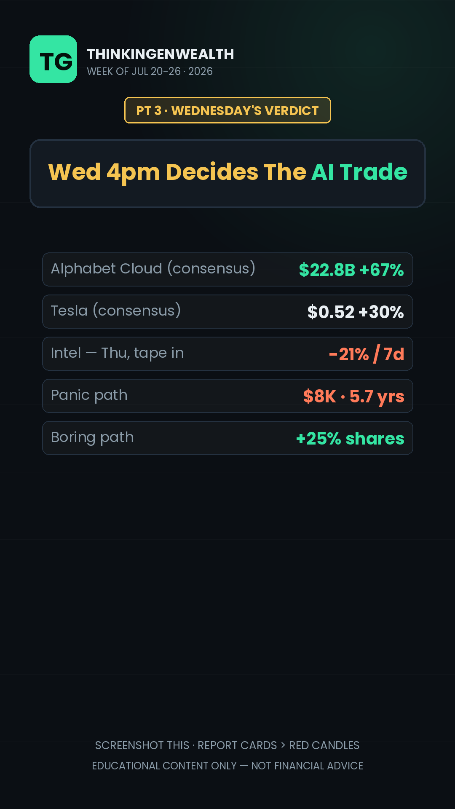
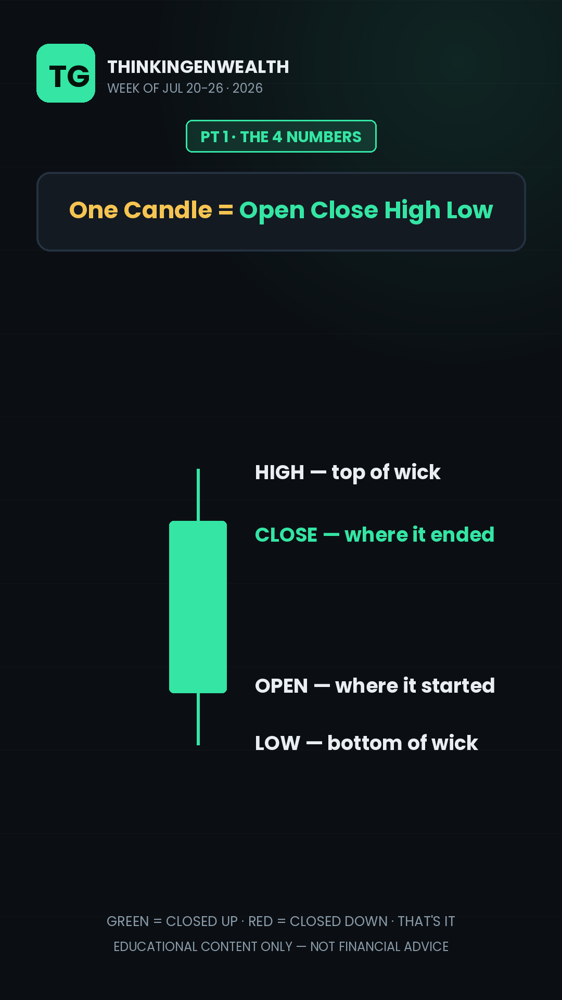
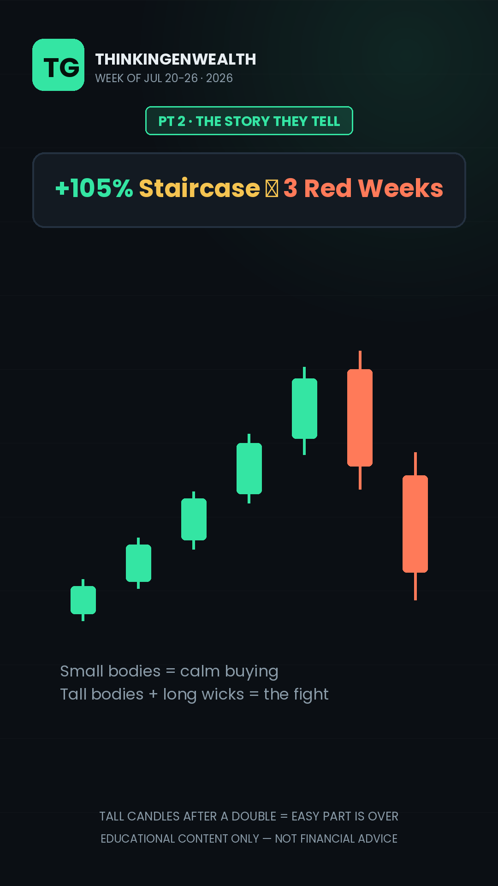
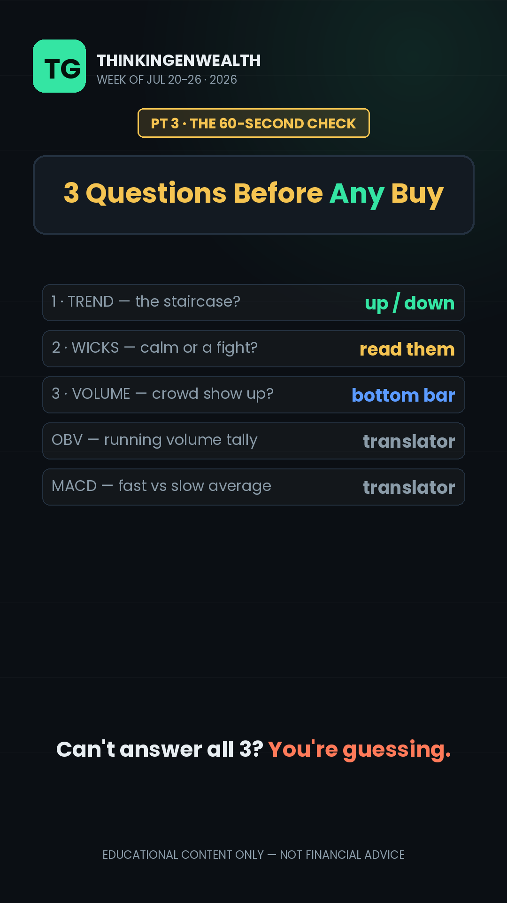
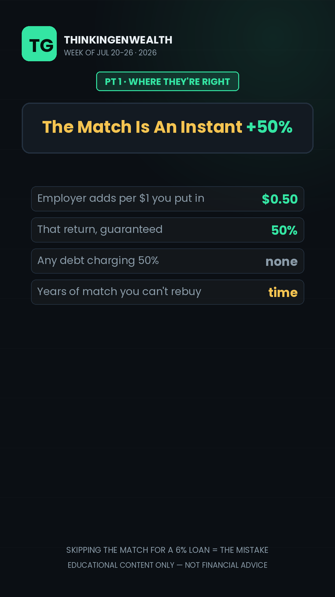
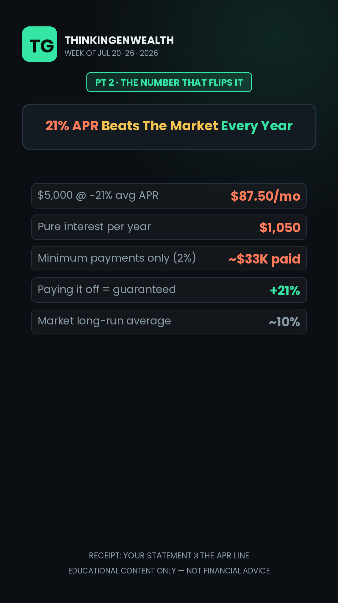
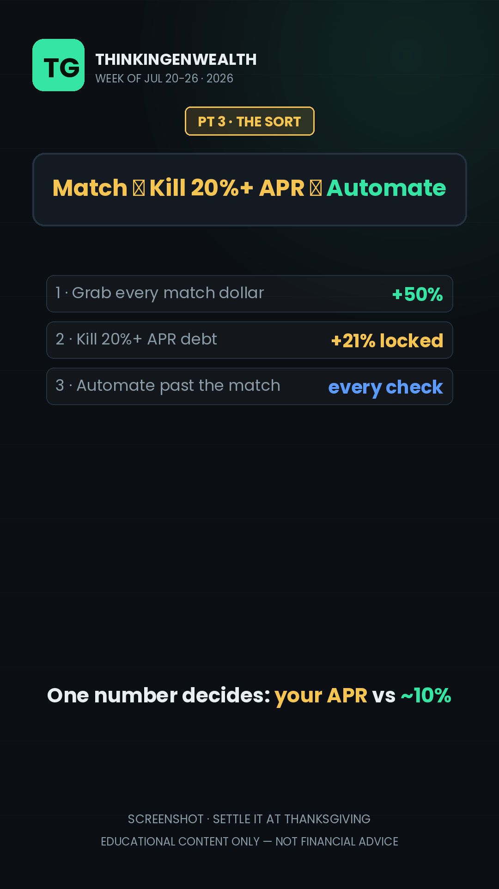

THINKINGENWEALTH · GENTHINKERS
3 short-form posts (Tue news-react · Thu chart evergreen · Sat collab) + the Sunday podcast anchor. Mon/Wed/Fri are PREP/ENGAGE days — record-ahead, comments, clip-cutting.
Thu + Sat record Monday (both evergreen-safe). Tuesday's react records Mon PM/Tue AM off Friday's confirmed numbers — no waiting on a print this week. Sunday's podcast records with the week's actuals filled in.
TikTok band 2–7pm ET (most-active hour drifted to 7–8pm this week — lean late) · IG ~3pm · YT long-form AM. News-reacts take the peak; the Search evergreen posts off-peak and compounds anyway.
The AI trade just broke, and this week referees it: the chip index (SOX) entered an official bear market Friday — −20.2% from its Jun 22 record after a +105% run, with ~$3.3 trillion in global chip value erased, triggered by Moonshot's free open-source Kimi K3 model + the AI-capex ROI question. Now the verdict: Alphabet + Tesla report Wed Jul 22 after close (Google Cloud consensus $22.8B, +67% — the cleanest "does AI pay?" receipt) and Intel Thu. Meanwhile it's Fed-eve: FOMC decides Wed Jul 29, 2pm ET — June CPI's −0.4% drop collapsed hike odds to ~15%, but oil back over $80 (Iran ceasefire collapsed) pulled them back into the 30s. Light data week: LEI Mon · jobless claims Thu 8:30 · flash PMIs + new home sales Fri. Sources: Bloomberg · Yahoo Finance · CNBC · BLS · CME FedWatch · Zacks · Kiplinger — verified Jul 19; re-verify at record time.
The chip bear market is the concrete event of the summer — exactly the all-time reach lane (shutdown 2.2M · "Buy the dip?" 27.3K · Korean crash · Microsoft). The viewer is the subject: a third of every index-fund dollar rides tech. Countdown to the payoff: the sell-at-$8,000 trap vs the boring path — and Wednesday 4pm as the cliffhanger. No print to wait on — numbers are Friday's confirmed closes, so it ships ON TIME Tuesday.
Fed-eve special: the week chips broke (Seg 1), the earnings verdict with the actuals filled in (Seg 2), the Tuesday decision + the $66/mo pass-through math (Seg 3), and the playbook that survives every headline (Seg 4). Through-line: was this the AI top — or the discount your future self wishes you'd bought? Full rundown below + scripts/podcast-rundown.md.
B-option title: "Chips Crashed, Inflation Fell — What Tuesday's Fed Call Does To Your Bills" · Through-line: was this the AI top or the discount — and what does Tuesday do to your bills either way?
Screen-shares: chip-selloff-dashboard.html (cold open + Seg 1) · earnings-verdict-dashboard.html (Seg 2 — FILL-LIVE boxes for Alphabet/Tesla/Intel actuals) · fed-decision-dashboard.html (Seg 3 — odds strip + the 25bp pass-through table). Fill every FILL-LIVE box with the week's actuals before recording.
Full word-for-word version lives in scripts/podcast-rundown.md — cold open, every transition, planted clip lines, and outro are verbatim there; segment bodies are full spoken sentences with every term explained (SOX = the chip-stock scoreboard · bear market = 20% below the peak · earnings = the report card · FOMC = the Fed's rate-setting meeting · APR = the price tag on borrowing).
Every posting day crosses the 3 streams: a proven pillar, a timely peg, and the audience. TikTok skews 25–34 (M69 — female share jumped to 31% this week), YouTube 35–54 (M~95) — same anchor, two age cuts. Reach-spikes take the peak (TikTok 3–7pm, drifting late · IG ~3pm); the Search evergreen posts off-peak and compounds (Search = a record 77.4% of TikTok traffic). Thursday's topic came straight from our own Search queries — demand pre-proven.

PT 1What broke
PT 2The $8,000 trap
PT 3Payoff · Wed's verdictPlain text = say it word-for-word. [Brackets] = production cue. Every term explained in the script — a total beginner can follow. Full text also in scripts/scripts.md.
Three point three TRILLION dollars just left the stock market in three weeks. And I need you to understand — that includes some of YOUR money.
If you have a 401(k) — that's the retirement account your job sets up — or any index fund, which is just a basket that buys a tiny slice of hundreds of companies at once, then roughly a THIRD of every dollar in there is riding on tech. You didn't pick that. It's just how the basket is built now. So when people say "the chip stocks are crashing," that's not Wall Street's problem — that's your account statement in August. There are 3 numbers that decide what happens next, I'm counting them down, and the last one is the difference between losing $2,000 and losing nothing. Stay for that one.
The chip index — it's called the SOX, basically a scoreboard of the 30 biggest computer-chip companies, the ones building all the AI hardware — ran up ONE HUNDRED AND FIVE percent from March to late June. Then in three weeks it dropped 20 percent. That 20-percent line matters because that's the official definition of a "bear market" — Wall Street's phrase for "this isn't a dip anymore."
Two things hit at once. First, a Chinese startup called Moonshot released a free, open AI model — Kimi K3 — that they claim performs near the best American models. Free is a scary word when trillions have been spent assuming this stuff stays expensive. And second — but really THEREFORE — investors finally asked the question they'd been skipping: all these hundreds of billions going into AI data centers... when exactly does the profit show up?
Here's the receipt you can check yourself: open your investing app, pull up any chip stock or the S&P 500, and tap the 3-month chart. That cliff on the right side — that's what $3.3 trillion leaving looks like. But before you touch the sell button—
Here's the math nobody does while they're panicking. Say you've got $10,000 in there and it drops 20 percent. You're at $8,000. On paper. It only becomes REAL when you sell. Because if you sell at $8,000, you now need a 25 percent gain just to get back to where you were — and if that money sits in a savings account earning 4 percent, getting back to $10,000 takes almost SIX YEARS. The person who did nothing? They're back at even whenever the market is. The person who sold the bottom bought themselves a half-decade detour.
And one more number for perspective: even after this 20 percent drop, that chip index is still up 63 percent from March. If you'd put in $10,000 in March, you'd still have about $16,300. The headline says crash. The 6-month chart says a monster year giving some back. Both are true — which one you act on decides everything. Therefore the real question isn't "should I sell" — it's what happens Wednesday night.
Because Wednesday night, this entire story gets its verdict.
Wednesday after the market closes, Alphabet — that's Google — and Tesla both report earnings. Thursday, Intel. Earnings are just a company's report card: what they made, what they spent. And this week, one line on Google's report card matters more than all the others: their cloud business — the part that sells AI computing power — is expected to grow 67 percent, to about $22.8 billion in three months. If that number shows up, the "AI has no payoff" story gets a lot weaker. If it misses — this selloff was the warm-up.
You don't need to trade ANY of this. You need to not get shaken out of a plan by three red weeks — and if you're putting in money every paycheck, understand: the same $100 that bought one share at the top buys 25 percent MORE shares down here. Automatic investing is literally the only strategy that gets BETTER when the market gets worse.
So here's the tile to screenshot. Panic path: sell at $8,000, need +25%, roughly 5.7 years in cash to claw back. Boring path: keep the automatic buys on, own 25% more shares per dollar down here, and let Wednesday's report card — not your fear — tell you what the AI trade is actually worth.
earnings-verdict-dashboard.html gold boxes as prints land · note the "priced for perfect" tape reaction for D Waugh's Seg 3 handoff.
PT 1The 4 numbers
PT 2Staircase → red weeks
PT 3Payoff · checklistThis one candle on the chart is telling you four numbers. Most beginners read zero of them — and then let a red week make their decisions for them.
The market just had its ugliest three weeks of the year, and thousands of people sold at the bottom of it because the chart LOOKED scary. Sixty seconds from now you'll read a chart instead of feeling it — and that's the difference between your first $200 surviving the market and your first $200 leaving with your confidence. Three things, counting down — and the third one is the tool the pros check that beginners have never even opened.
Every candle is one slice of time — on a daily chart, one candle is one day. The thick part — the body — shows two numbers: the price when that day STARTED, called the open, and the price when it ENDED, the close. Green just means it closed higher than it opened. Red means it closed lower. That's it. That's the whole secret.
The thin lines poking out — the wicks — are the other two numbers: the highest and lowest price hit during the day. So one green candle with a long top wick literally reads as a sentence: "buyers pushed it way up... and sellers slapped it back down before the close." That's not decoration. That's a fight, and the wick shows you who won.
Receipt: open your investing app right now, tap any stock, switch the chart to "1M" — one month — and find the longest wick on the page. You just found the day the fight was hardest. But one candle is a word, not a sentence—
Zoom out on this month's chip-stock index — the one all over the news. From March to June: staircase of green bodies, small wicks. Calm, steady buying. Late June: the candles get TALLER — bigger bodies, longer wicks. Then three weeks of heavy red bodies. Tall candles mean big disagreement — and big disagreement after a 105 percent run is the chart's way of saying "the easy part is over."
Here's what that reading is FOR: not predicting — the chart can't tell you tomorrow. It tells you what already changed, so headlines don't get to surprise you. Anyone who looked at those candles in early July saw the temperature rising before the "bear market" headline ever printed. Therefore — the last tool, the one that separates a real move from a fake one.
Because a candle without volume is just a rumor.
Volume is the bar at the bottom of the chart — how many shares actually traded. A big red candle on TINY volume? Few people even participated; weak signal. Big red candle on HUGE volume? The crowd really did change its mind.
And the two tools people keep searching us for, in plain English. OBV — on-balance volume — is just a running tally: it adds the day's volume when the candle's green, subtracts it when it's red. If price is flat but OBV is climbing, buyers are quietly loading up. MACD is two moving averages — a fast one and a slow one — and all it measures is whether the CURRENT mood is stronger or weaker than the recent trend. When the fast line crosses under the slow one, momentum is fading. Neither one is a crystal ball. Both are translators — they turn a thousand candles into one sentence.
So here's the 60-second read before you ever buy — screenshot this. One: what's the TREND — is the staircase going up or down? Two: what are the WICKS saying — calm agreement or a fight? Three: does VOLUME confirm it — did the crowd actually show up? Three questions. If you can't answer all three, you're not investing yet — you're guessing.
earnings-verdict-dashboard.html (Alphabet/Tesla/Intel actuals + moves) and note where FedWatch odds sit after earnings week. Sunday fills the final numbers at record time.weeks/Jul-6-12/greenscreen/SAT/) tonight — not Saturday morning.weeks/Jul-6-12/greenscreen/SAT/) — something ships Saturday either way.
PT 1Where they're right
PT 2The APR flip
PT 3Payoff · the sortOne of the biggest finance platforms in the country just told millions of people that paying off your debt before investing could be one of your most expensive mistakes. And the wild part? They're half right.
Getting this ORDER wrong — invest first or pay debt first — is quietly costing some of you a thousand dollars a year. Getting it right is the closest thing to free money that exists in personal finance. So let's actually settle it — with the math, not the vibes.
Here's their best case, and it's a real one. If your job offers a 401(k) match — say they add 50 cents for every dollar you put in — that is an instant 50 percent return the moment it hits. No debt on earth charges you 50 percent. So yes: if you're skipping YEARS of employer match to slow-pay a car loan at 6 percent, EYL is right — that mistake compounds against you for decades. Time in the market is the one thing you can't buy back later. But — and this is the whole video — they said DEBT like it's one thing. It's not.
Pull out your credit card statement — the real one — and find the line that says APR. That's the annual percentage rate: the price tag on borrowing, what the card charges you per year for carrying a balance. The average card right now sits around 21 percent. Carry $5,000 and you're paying about $87.50 a MONTH — $1,050 a year — in pure interest, before you've touched what you owe. Now flip it: paying that card off is a GUARANTEED 21 percent return. The stock market's long-run average is around 10 — and it's not guaranteed. Nothing legal pays you a locked-in 21. And if you only make minimum payments on that $5,000? On a typical 2-percent minimum, the math runs to roughly THIRTY-THREE THOUSAND dollars paid over decades. That's what "invest first, card later" actually costs at 21 percent.
So who's right — EYL or your uncle who says "debt-free first, always"? Both. In this exact order.
One: grab every dollar of employer match — that 50 percent beats everything. Two: kill anything charging 8 to 10 percent or more — that 21 percent card is bleeding you faster than any index fund can heal you. Three: THEN automate investing past the match. That's it. That's the whole debate, sorted by one number: the APR on your statement versus the return you can actually expect.
Match first — it's 50 percent. High-APR debt second — killing 21 percent is a guaranteed win. Automate third. Screenshot it, tape it to your fridge, settle the argument at Thanksgiving.
scripts/podcast-rundown.md): 4 planted clip lines verbatim, through-line opened cold and closed in Seg 4.greenscreen/PODCAST/POD_V1_kenburns.mp4 + tile) into the evening window · hard CTA allowed (weekend).None pulled — full slate. $3.3T react (Tue) + candlestick evergreen (Thu) + EYL collab (Sat) + Fed-eve podcast (Sun) fills every slot under the 3+1 cadence. Standby: reel #16 ("What people think investing is vs what it is" — TIER 1, tiles ready in weeks/Jul-6-12/greenscreen/SAT/) posts in the Saturday slot ONLY if the collab misses a 6th week. Rotation log updated in TGW Evergreen Reel Bank.md. Last pull: #24 (wk Jul 6–12) — no repeat before ~Sep 7.
Full bank with on-screen text + CTAs: TGW Evergreen Reel Bank.md (ships with this site). #24 needs its live APR re-verified whenever it posts. Note 30 ("What NOT to do in a volatile market") pairs naturally with any selloff week — held in reserve since Tue's react covers the same ground deeper.
Top posts pull people in with markets, credit, and "how I did X." The Discord pitch is investing. Connect them: "Fix your credit → get approved for funding → open a brokerage → then put that capital to work." One ladder, not two products. (This week it's literal: Sat's APR sort → Tue's don't-panic math → Thu's first chart lesson.)